Active filter with harmonic analyser - average model
Demonstration of the use of an Active Harmonic Filter to mitigate harmonic distortion in a microgrid.
Introduction
With the increasing use of non-linear loads in modern power grids, high frequency harmonic currents are becoming more of an issue. Utilization of Active Harmonic Filters (AHF) is a very effective way of dealing with this harmonic pollution. With a shunt topology AHF, a current source connects a non-linear load to the grid, which injects high current harmonics to the load. These current harmonics are designed to cancel the effects of harmonic pollution and ideally allow the grid current to be a pure sine curve. One very commonly used way to create the aforementioned current source is via a current-controlled voltage source inverter (VSI), with a capacitor for energy storage at the DC side. In an average model, this means that, instead of VSI, three signal-controlled voltage sources (SCVS) will be used. This model is intended to demonstrate the operation of an AHF for microgrid applications, where the switching effects of power converters do not need to be taken into consideration.
Model description
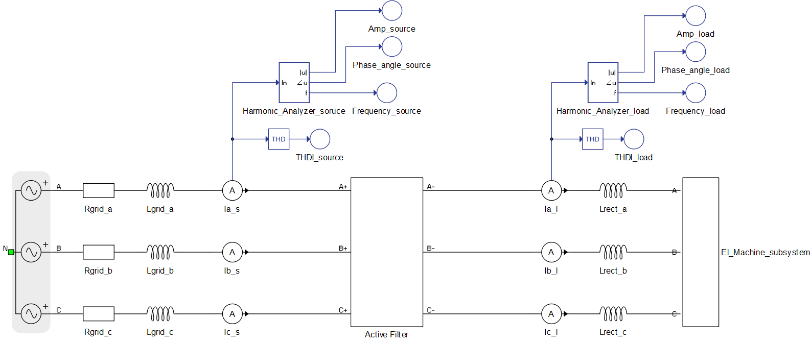
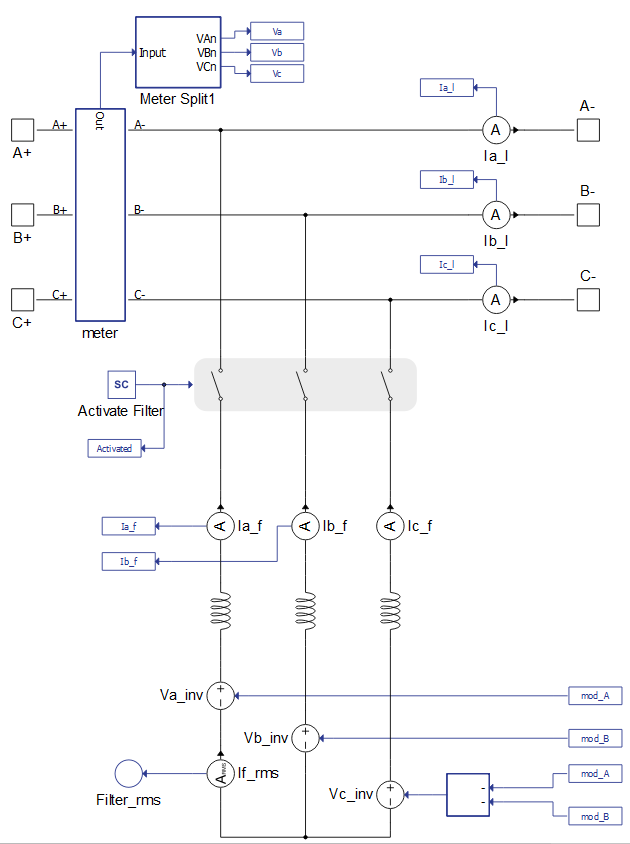
The El_Machine_subsystem consists of a Three-Phase Diode Rectifier and a Variable Resistor on the DC side. The load power is controlled through SCADA Inputs (Figure 3). In the control design, it is assumed that system is a three-wire system and load currents and waveforms are the same, apart from being successively shifted by 120 degrees.
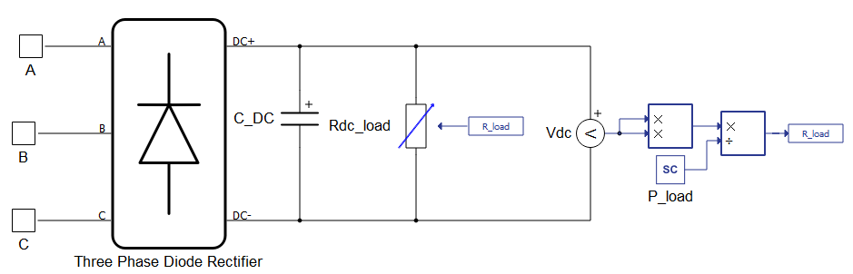
The control part consists of a reference current generator and a current control loop, as shown in Figure 4.
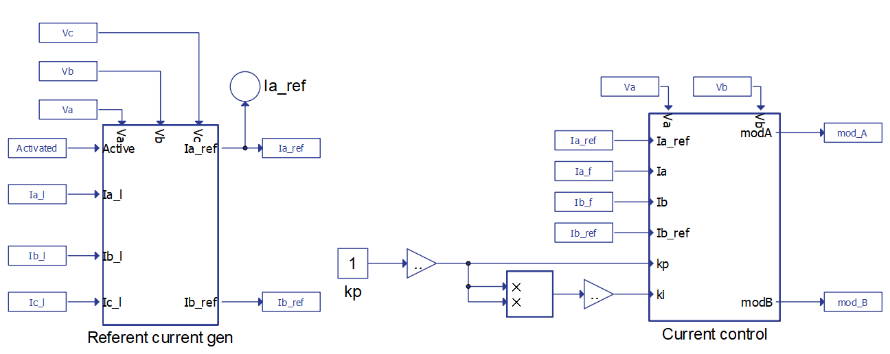
The reference current generation shown in Figure 5 is calculated using dq-frame. Grid measurements which are necessary in order to perform abc to dq transformation are obtained via a Three-phase PLL. AC components of d and q currents are the ones that correspond to the higher frequency harmonics. Thus, these are the currents that are desired as filter output currents.
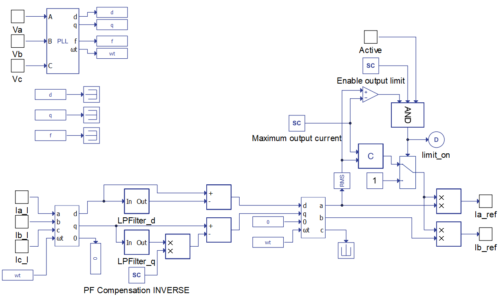
The model has options to enable/disable power factor (PF) compensation and to enable/disable filter output current limitation. The latter option is motivated by limited output in real-world active filters due to the converter’s current rating. If the PF compensation option is enabled, the entire q current will be compensated. If the output current is being limited, a simple algorithm will adjust the reference currents before sending them to the current control loop (Figure 6).
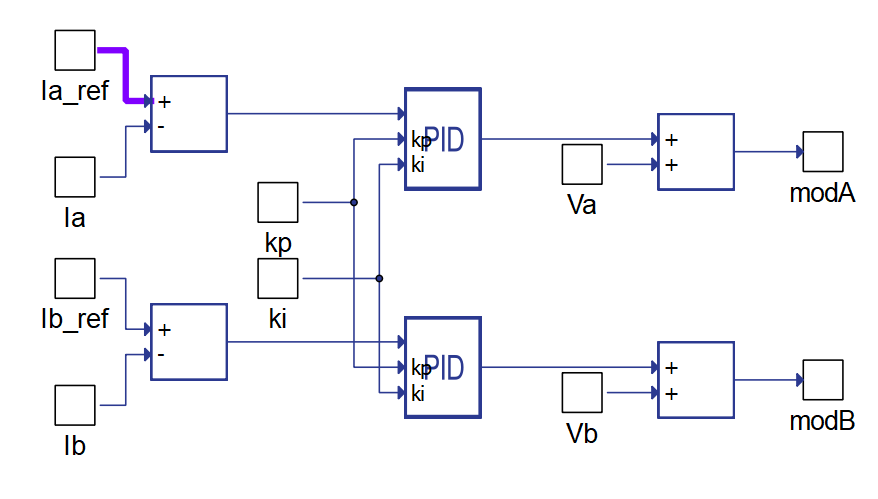
The current control loop contains two proportional and integral (PI) Regulators. In each of these regulators, the error current is processed and converted to the desired voltage for the inductor that is connecting sources to grid. After adding the instantaneous value of grid phase voltage, the desired voltage for SCVS is obtained. Due to the aforementioned assumptions about load currents, it is not necessary to do the calculation for the third voltage value, because the sum of all three voltages must be zero.
Measurement of the desired harmonics is done using a Harmonic Analyzer component, which is shown in Figure 7. There are two Harmonic Analyzer components in this model, one is used for measurement of harmonics in the grid side current while another is used to measure harmonics in the load side current. Desired harmonics for measurement are entered as a list into the Harmonic Analyzer component.
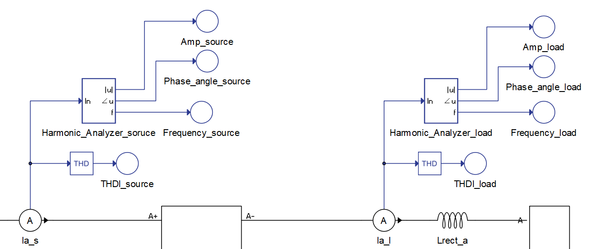
Simulation
This application comes with a pre-built SCADA panel (Figure 8). The panel offers most essential user interface elements (widgets) to monitor and interact with the simulation in runtime. You can customize it freely to fit your needs.
A group of widgets in the Active Filter Sub-panel are used to interact with the AHF. You can observe the measurement of total harmonic distortion at both load and source side of the grid, filter the RMS current, and perform active power and power factor measurement. Filter, PF compensation, and output filter current limitation can be activated/deactivated using the checkbox widget. Maximum output current can be changed and, if the maximum output is reached, the LED will glow red in order to signal this event. Using the knob widget, you can adjust the desired load power in kW. In the middle of the SCADA panel, three different sub-panels display grid side and load side harmonics using bar graphs. Values of harmonics are displayed as a percentage of the base current value.
Upon starting the simulation, in the Capture/Scope widget, waveforms of load current, source current, and grid voltage can be observed. Load THDI can vary in a wide range of values. Parameters that have a large influence on the current waveforms are inductances between the grid and the rectifier (Lrect_x, where x stands for one of three phases-a, b or c). In this model, it is recommended to keep these values under 0.2 mH; by default, they are set at 0.15 mH. Power consumption of the machine is tested in a range from 100 kW up to 1 MW. It should be noted that, as the power rating of the machine rises, in order to maintain a well-known three-phase diode rectifier current waveform, you should decrease values of the Lrect_x inductances.
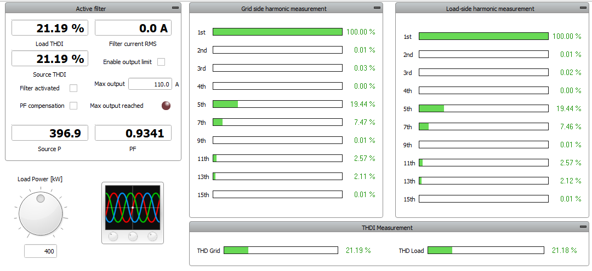
Source THDI is expected to be under 4% for an execution rate of 100 µs. Fast response is needed since the reference current contains high frequency harmonics. Therefore, it is not advised to run the Active Filter component on execution rates slower than 100 µs. Once the filter is activated, the grid current waveform is expected to be nearly sinusoidal and source THDI is expected to be very low. The effect of the PF compensation option is shown in Figure 9 and Figure 10.
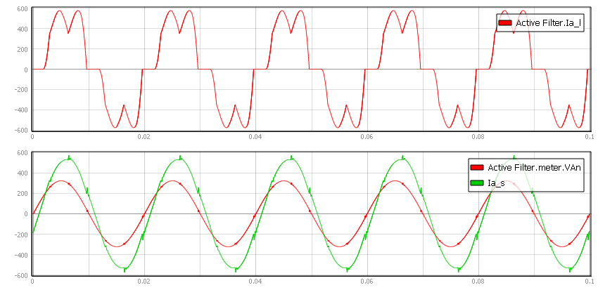
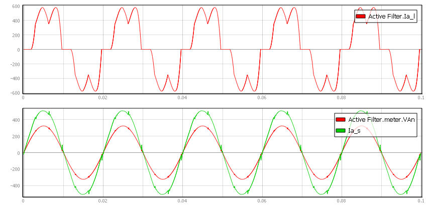
In Figure 9, you can see that there is a phase offset between the source voltage and current. In this situation, the PF measurement shows 0.9518. On the other hand, in Figure 10, there is no phase difference between source voltage and current, which is confirmed by the PF measurement of 1.0000. In both cases, THDI has been reduced from approximately 26.4% to approximately 3%.
The output current limitation is shown in Figure 11. For a load power of 250 kW and a distortion of 27.9% with PF compensation, the filter RMS current is 158 A. If the maximum output is set to, for example, 110 A and the output limitation is enabled, the current control algorithm will prevent the filter from supplying current which has an RMS higher than 110 A. Because of this, it can be easily seen that the source current waveform is not purely sinusoidal. This is also confirmed by the source THDI measurement, which shows a distortion of 8.8%.
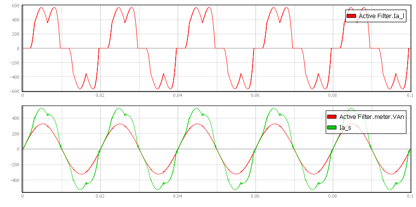
In this case, you can disable PF compensation. This means that filter output current will be at 107 A, which is less than the limit. Consequentially, the harmonic distortion will once again be reduced to 2.93% and waveforms will be identical to those in Figure 9. This means that in a real-world application, integrating a 110 A filter on a non-linear load (such as the one in this example) can compensate harmonic distortion but not the PF.
Test automation
We don’t have a test automation for this example yet. Let us know if you wish to contribute and we will gladly have you signed on the application note!
Example requirements
Table 1 provides detailed information about the file locations and hardware requirements for running the model in real-time, followed by the HIL device resource utilization when running the model using this minimal hardware configuration. This information is provided to help you with running and customizing the model as you see fit.
| Files | |
|---|---|
| Typhoon HIL files |
examples\models\power quality\ active filter \ active filter (average) active filter avg.tse active filter avg.cus |
| Minimum hardware requirements | |
| No. of HIL devices | 1 |
| HIL device model | HIL402 |
| Device configuration | 4 |
| HIL device resource utilization | |
| No. of processing cores | 1 |
| Max. matrix memory utilization | 77.37% |
| Max. time slot utilization | 73.75% |
| Simulation step, electrical | 1 µs |
| Execution rate, signal processing | 100 µs |
References
Authors
[1] Jovan Zelic
[2] Kristian Monar